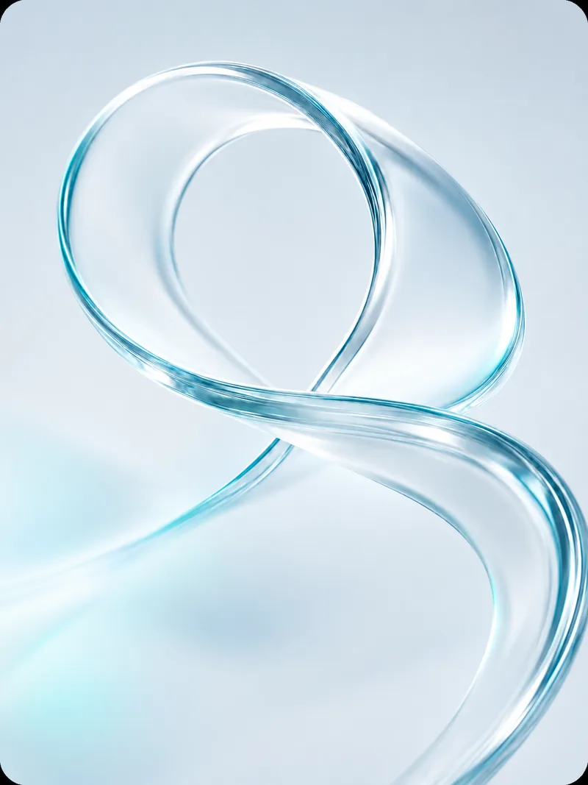
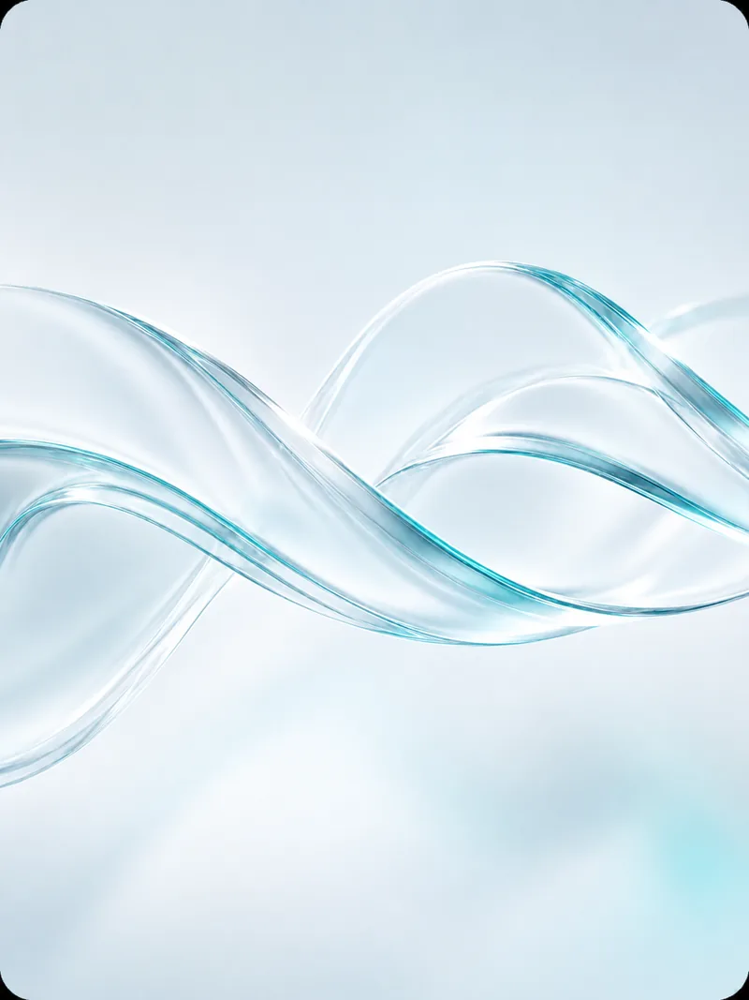
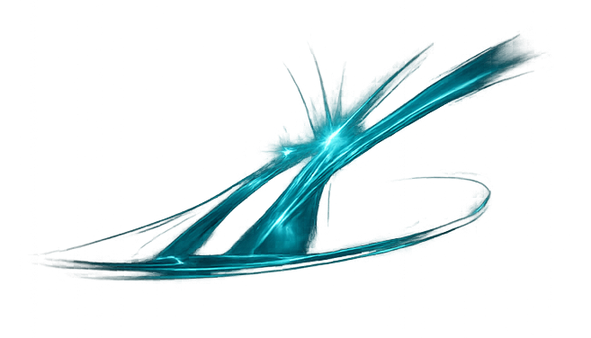

Oracle 버전 업그레이드
11g → 19c 등 메이저 버전 업. 호환성 검토, 테스트 이관, 실 이관, 검증
어떤 버전으로, 어떤 플랫폼으로든 데이터를 온전히 옮깁니다
마이그레이션은 실패 시 고객 피해가 가장 큰 작업입니다
바토스는 Oracle을 깊이 아는 엔지니어가 직접 수행하기 때문에, 이관 과정에서 발생하는 PL/SQL 호환성 이슈·데이터 타입 변환·의존성 문제를 정확히 진단하고 해결합니다.
무중단 이관이 필요한 환경에서는 GoldenGate를 활용한 실시간 복제 방식으로 서비스 중단 없이 전환합니다.

11g → 19c 등 메이저 버전 업. 호환성 검토, 테스트 이관, 실 이관, 검증
서버 교체, OS 변경 대응, 물리 → 가상화 이전
Oracle ⟷ EDB(PostgreSQL), Oracle ⟷ Tibero, Oracle ⟷ MySQL(Maria) 등 이기종 플랫폼 전환

GoldenGate 기반 실시간 복제를 활용한 서비스 중단 없는 이관
이관 전후 데이터 비교, 성능 비교 테스트, 검증 보고서 제공

객체 정의와 의존성을 사전에 검토합니다.
실 환경과 동일한 조건에서 시험 이관을 수행합니다.
이관 데이터의 정합성과 성능을 검증합니다.
계획된 시간에 실제 데이터를 이관합니다.
이관 후 안정화 상태를 지속적으로 모니터링합니다.